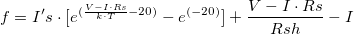

を計算します。
を計算します。 \cdot x") のように再定義します。フィット後、 を計算します。
のように再定義します。フィット後、 を計算します。最終更新日:2017/7/20
カーブフィットを行うとき、次のような問題が起こることがあります。
どちらの場合も、非常に大きいまたは非常に小さいパラメータを避けるために式を再定義する必要があります。例えば、
を計算します。 のように再定義します。フィット後、 を計算します。
別の例として、次の非線形ダイオード陰関数を考えます。
}} + \frac{{V - I \cdot Rs}}{{Rsh}} - I\,\!") , kは一つの単位として
, kは一つの単位として にあります。
にあります。
この関数でフィットするには、最初にパラメータ から
から （
（") ）にリセットし、パラメータが非常に小さくならないようにします。
）にリセットし、パラメータが非常に小さくならないようにします。

この方法では、非常に小さいパラメータを防ぎ、最終的にはフィットが収束します。
キーワード:良いフィット, 収束しない, 標準誤差の欠損値, diode関数